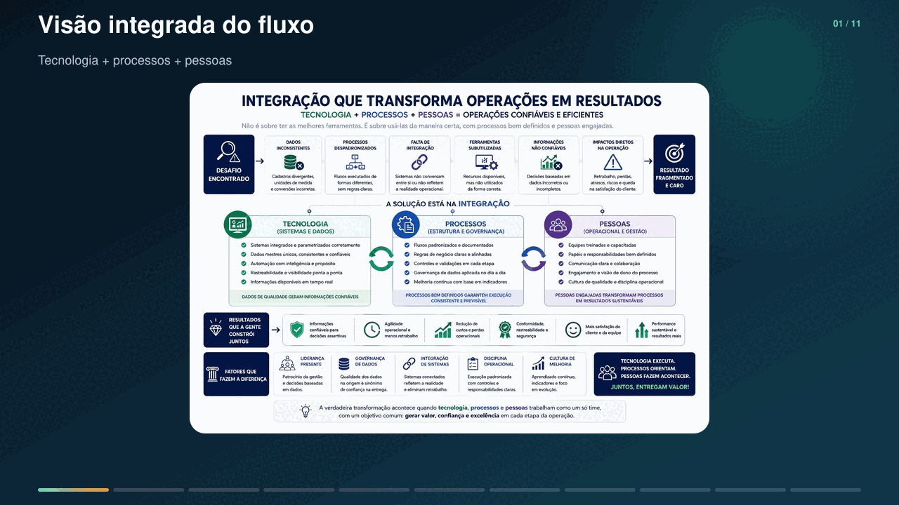
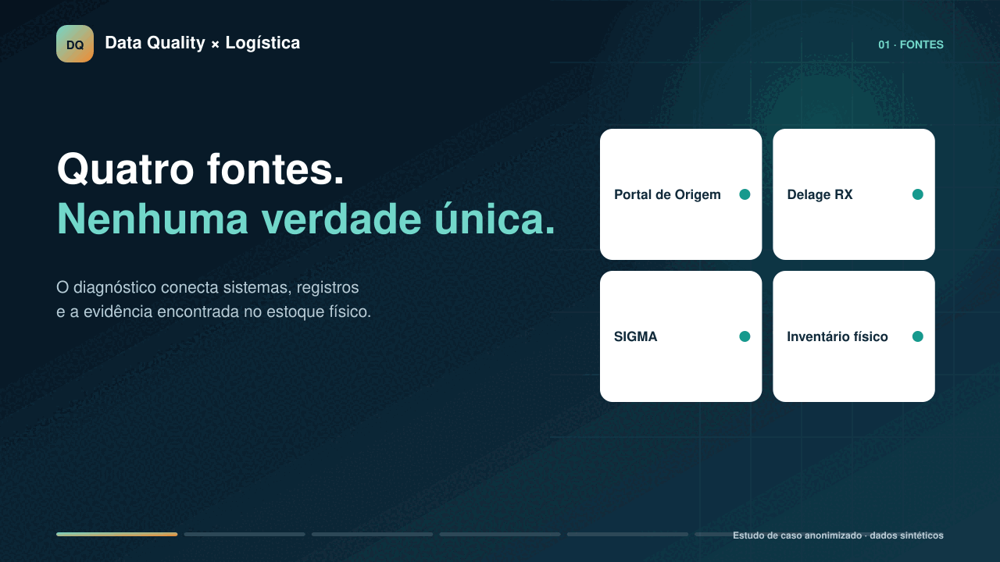

Estudo de caso anonimizado · operação logística
Data confiável começa no encontro entre operação e sistema.
Diagnóstico, saneamento cadastral e reconciliação de estoque em um centro de distribuição, conectando inventário físico, WMS e regras de negócio.
4 fontes
Dados operacionais
PortalDelage RXSIGMAFísico
Núcleo
Reconciliação
validar · comparar · tratar
Resultado
Dado governado
O desafio
Quando o estoque físico conta uma história diferente dos sistemas
A operação precisava transformar divergências isoladas em um diagnóstico estruturado, capaz de diferenciar problemas de cadastro, processo, sistema e execução física.
Físico × sistema
Diferenças de quantidade, embalagem e localização comprometiam a confiança no saldo.
Dados mestres
Lote, validade, unidade de medida, fornecedor e posição exigiam padronização.
IA no fluxo
As respostas do recurso nativo de IA precisavam ser confrontadas com evidências físicas e sistêmicas.
Múltiplas fontes
Portal de Origem, Delage RX, SIGMA e inventário não formavam uma verdade única automática.
Fluxo logístico integrado
Tecnologia, processos e pessoas transformando a operação
Uma leitura guiada do flowchart executivo: do dado inconsistente e da falta de integração até uma operação confiável, rastreável e orientada por resultados.

Versões independentes para desktop e celular · conteúdo genérico · nenhuma particularidade do cliente
Abrir flowchart completo →Demonstração visual
Da divergência ao dado governado
A animação utiliza registros fictícios e possui versões específicas para computador e celular.

Conteúdo conceitual · dados sintéticos · nenhuma tela real reproduzida
Metodologia
Uma jornada de seis etapas orientada por evidências
- 01
Descoberta
Observação em campo, entrevistas e entendimento do fluxo real.
- 02
Mapeamento AS-IS
Processos, sistemas, decisões manuais e exceções.
- 03
Inventário
Conferência física e captura dos atributos críticos.
- 04
Reconciliação
Comparação entre Delage RX, SIGMA, Portal e evidência física.
- 05
Saneamento
Correção, padronização, registro da causa e revalidação.
- 06
TO-BE e governança
Controles preventivos, responsabilidades e indicadores.
Diagnóstico
Seis dimensões para avaliar a qualidade
O objetivo não era apenas corrigir saldos, mas entender por que as divergências eram criadas e como evitar reincidências.
Completude
Os atributos necessários estão preenchidos?
Consistência
As fontes apresentam o mesmo valor?
Unicidade
Há duplicidade de item ou fornecedor?
Validade
Formato e regra de negócio são respeitados?
Acurácia
O registro corresponde à evidência física?
Rastreabilidade
É possível reconstruir origem e tratamento?
12 GAPs críticos
Um diagnóstico organizado por causa, não apenas por sintoma
Os achados foram agrupados em três categorias para conectar cada divergência ao domínio responsável e ao controle preventivo correspondente.
01
Processos
Operação física
- GAP 01 Mistura de lotes no mesmo pallet
- GAP 04 Posições bloqueadas ou alocadas
02
Governança
Dados mestres
- GAP 02 Evidência fotográfica genérica
- GAP 03 Sobrescrita do histórico visual
- GAP 05 Cadastros não padronizados
- GAP 07 Dependência da qualidade na origem
03
Tecnologia
Sistemas e infraestrutura
- GAP 06 Conversões e parametrizações
- GAP 08 Validações preventivas insuficientes
- GAP 09 Indisponibilidade das plataformas
- GAP 10 Divergências na leitura por IA
- GAP 11 Gestão de mudanças
- GAP 12 Segregação de ambientes
Falha na origem→
Erro propagado→
Retrabalho→
Risco de rastreabilidade
Arquitetura TO-BE
Da correção reativa à prevenção na origem
O modelo futuro combina validação preventiva, reconciliação monitorada, tratamento de causa raiz e medição de reincidência.
- 01
Prevenir
Validar cadastro, lote, validade, unidade e evidência no recebimento.
- 02
Executar
Operar com posição válida, segregação de lotes e coleta no ambiente correto.
- 03
Reconciliar
Comparar evidência física e dados do Portal, Delage RX e SIGMA.
- 04
Tratar
Registrar a exceção, identificar a causa raiz, corrigir e revalidar.
- 05
Sustentar
Medir acurácia, reincidência, tempo de tratamento e qualidade da IA.
Cinco camadas de controle
- Dados mestres e aprovação cadastral
- Operação física e aplicação de FEFO
- Sistemas, integrações e evidências
- IA, coleta digital e supervisão humana
- Infraestrutura, mudanças e contingência
Telemetria funcional da IA
Automação sujeita a evidência e auditoria
Leituras divergentes devem ser confirmadas por uma pessoa antes da atualização definitiva e registradas para análise de recorrência.
Taxa de falha = leituras divergentes ÷ leituras validadasEcossistema analisado
Sistemas diferentes, uma decisão operacional
OrigemPortal
→
GestãoDelage RXWMS + fluxo com IA
↔
SolicitaçõesSIGMA
↔
EvidênciaEstoque físico
IA
Avaliação operacional da IA nativa
As respostas utilizadas no fluxo do WMS foram confrontadas com registros e evidências físicas. O TO-BE recomenda confirmação humana, telemetria funcional e acompanhamento da reincidência.
Entregas e resultados
Da observação em campo a um modelo de governança
Diagnóstico sistêmico e operacional estruturado por evidências.
Mapeamento AS-IS/TO-BE dos fluxos críticos do centro de distribuição.
Regras de validação para lote, validade, unidade, fornecedor e posição.
Classificação de causas e priorização de riscos operacionais.
Procedimentos, treinamento e alinhamento entre operação e área técnica.
Modelo de indicadores para acurácia, reincidência e tempo de tratamento.
Acurácia
Completude
Reincidência
Tempo de tratamento
Falha de IA
Posição válida
Causa raiz
Compromisso com a evidência
O case não publica percentuais de melhoria sem uma medição formal de antes e depois. O número quantitativo apresentado limita-se ao volume aproximado mapeado.
Atuação profissional
Negócio, dados e operação na mesma análise
Atuação em Business Analysis, governança e qualidade de dados, conectando usuários, processos logísticos e sistemas para transformar evidências em decisões.
Business AnalysisData QualityData Governance
Data ReconciliationBPMNSupply Chain
Root Cause AnalysisLean Six Sigma